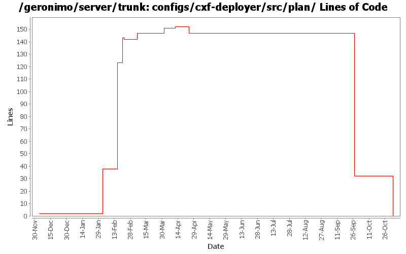

[root]/configs/cxf-deployer/src/plan

| Author | Changes | Lines of Code | Lines per Change |
|---|---|---|---|
| Totals | 14 (100.0%) | 161 (100.0%) | 11.5 |
| dims | 4 (28.6%) | 144 (89.4%) | 36.0 |
| gawor | 5 (35.7%) | 15 (9.3%) | 3.0 |
| jdillon | 1 (7.1%) | 1 (0.6%) | 1.0 |
| djencks | 1 (7.1%) | 1 (0.6%) | 1.0 |
| prasad | 1 (7.1%) | 0 (0.0%) | 0.0 |
| kevan | 2 (14.3%) | 0 (0.0%) | 0.0 |
GERONIMO-3565. Configs distributed amongst framework/configs and plugins
0 lines of code changed in 1 file:
making cxf intergration more modular: separated ejb bits from servlet bits.
1 lines of code changed in 1 file:
keep up with cxf trunk
0 lines of code changed in 1 file:
CXF requires XmlSchema 1.2
1 lines of code changed in 1 file:
need latest XmlSchema SNAPSHOT for Axis2
1 lines of code changed in 1 file:
new dependency for cxf
8 lines of code changed in 1 file:
missed new dependency for cxf for app client
5 lines of code changed in 1 file:
Std props
dos2unix on some files with inconsistent newlines
1 lines of code changed in 1 file:
GERONIMO-2865 Use defaultEnvironment instead of custom method to add dependencies to apps being deployed. Improve name of property setting jaxws implementation to use
1 lines of code changed in 1 file:
GERONIMO-2849 - service-ref app client test
GERONIMO-2850 - CXF: initial web service support for EJBs
20 lines of code changed in 1 file:
Fix for GERONIMO-2825 - CXF and spring version update
Fix for GERONIMO-2826 - Test case to test invocations using service-ref
Fix for GERONIMO-2830 - Updated dependencies for ejb-based tests
Fix for GERONIMO-2836 - Improvements for CXF integration
Fix for GERONIMO-2840 - Minor fixes
85 lines of code changed in 1 file:
Fix for GERONIMO-2791 - Switching ServiceRef naming builder
38 lines of code changed in 1 file:
GERONIMO-2537 Fix notices and src headers in recent jee5 updates. Update Web Console notice.txt w/ ibm donation information, add copyright to assembly notice files, and remove ASF v 1.1 license from source borrowed from xerces project
0 lines of code changed in 2 files: